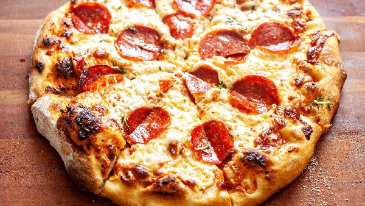

Pizza Recipe

How to make pizza on a grill!
Follow this recipe for making a pizza on the grill. It tastes great and is easy to make!
Ingredients
- 1 ready made pizza crust
- 2 cups shredded mozzarella cheese
- 1 cup tomato sauce
- 1/2 cup chopped green bell pepper
- 1/2 cup fresh sliced mushroom
Steps
- Preheat an outdoor grill for high heat and lightly oil grate.
- Roll out prepared pizza dough to a size that will fit your grill.
- Place on grill for 5 minutes, or to desired doneness, and flip over.
- Now add the sauce, cheese, green bell pepper and mushrooms.
- Cover the grill and allow to cook over high heat for 5 to 10 minutes, or until cheese is melted and bubbly.